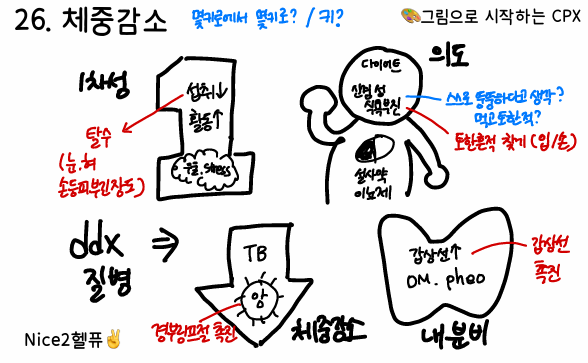

40. 체중감소
-> 의미있는 체중감소인가? (6개월간 체중의 5% 이상)

원인 | ||||||
수의적 | 에너지 섭취 감소: 약물(항우울제, 다이어트약, 설사약), 식이요법/섭식장애(우울, 식욕부진) 에너지 소모 증가: 운동과다, 직업 | |||||
불수의적 | 식욕감소: GI 질환, 정신질환, 약물 등 에너지 소실 증가: 당뇨, 갑상샘항진증, 신생물, 만성질환 등 | |||||
평가목표 1) 의미 있는 체중 감소를 구별 2) 불수의적 체중 감소의 원인 감별 | ||||||
구체적인 성과 | ||||||
병력 청취 | 체중감소 양상 확인
| 임상적 유의성: 6개월~1년 사이 평소 체중의 5% 이상 실제 변화: 몇kg에서 현재 몇kg 속도와 기간 | ||||
| 수의적 에너지 섭취와 소모 변화 확인 | 에너지 섭취: 최근 식사량 변화, 다이어트 에너지 소모: 운동량, 직업/환경변화 심리: 우울증이나 적응장애로 식욕 부진 | ||||
| 체중감소 유발하는 기질적 원인 감별 | 식사량이 그대로인데 빠진다 - 당뇨병: 다음/다뇨/다갈 - 갑상샘항진증: 더위불내성/피로 - 흡수 장애: 변이 기름지거나/설사 식사량이 줄면서 빠진다 - 악성 종양: 발열/밤에 식은땀/가족력 - 만성 감염: 2주 이상의 기침/가래 (TB) - 정신과: 우울증, 거식증 | ||||
신체 진찰 | 신체계측을 통해 체중감소 확인 | BMI 측정: BMI = kg/m² 허리둘레: 배꼽 높이에서 측정 (복부비만 : 남≥90cm, 여≥85cm) | ||||
| 기질적 질환 감별 위한 신체진찰 | 두경부: 결막, 갑상샘, 림프절 촉진 (갑항, 암) 흉부: 호흡음, 심음 청진 복부: 시-청-타-촉 -> 장음항진(흡수장애), 간비비대/종괴 사지: 손떨림(갑항), 부종, 황달(GI 암) | ||||
진단 및 치료 | 1. 원인을 감별할 수 있는 진단계획 수립 2. 원인에 따른 치료계획 수립 | |||||
| 기본검사 및 치료 | 혈액검사, 갑상샘기능검사, 흉부 X-ray, 대변 잠혈검사 | 식사요법, 운동요법을 통한 체중감량 약물치료, 동반질환 치료 | |||
| 원인 감별 | 일차성 / 약물유발 |
| 생활습관 교정 / 약물 중단 | ||
|
| 내분비 | 갑상샘기능항진증 | 갑상샘기능검사 | 항갑상샘제 | |
|
|
| 크롬친화세포종 | 24시간 소변 메타네프린 | 부신절제술 | |
|
|
| 당뇨병 | 혈당검사 | 혈당강하제, 인슐린 주사 | |
|
| 호흡 | COPD/폐암 | PFT, CXR, ABGA | 기도확장제, 산소치료 | |
|
|
| TB | 객담 항산염색, 배양 | 항결핵제 | |
|
| 소화 | 위암/대장암 | 위내시경, 복부 CT | 위절제술, 항암 치료 | |
|
|
| 짧은장증후군 | 복부초음파, AXR | TPN, 지사제 | |
|
|
| IBD | 대장내시경, 복부 CT | 설파살라진, 스테로이드, 영양공급 | |
|
| 정신 | 주요우울증 | Beck 우울척도검사 | 항우울제(SSRI, TCA), 전기경련요법 | |
|
|
| 신경성 식욕부진 | 전해질검사 | 영양 공급 및 입원 치료 | |
환자 교육 | 체중관리를 위한 생활습관 교육 | 식습관 개선: 규칙적인 식사로 3끼 식사 거르지 않기 스트레스: 취미생활을 가지거나 요가 명상 등 추천 | ||||
PPI 및 주의 사항 | ① 병력청취 시 올바르지 못한 생활습관이 나오더라도 중립적으로 들은 뒤 교육에서 생활습관 교정해주기 ② 체중관리 어려움에 공감 표하기 ③ 당뇨의 경우 합병증과 혈당 관리의 중요성 설명 ④ 거식증의 경우 자신에 대한 잘못된 인상 교정 & 20% 이상 감소거나 내과적 문제 심각 시 입원 권유 | |||||
|
|
|
|
|
|
|
질환 | 질환 설명 | 병력청취 | 신체진찰 | 검사 | 치료 | |
1차성 | 1차성 체중감소 2+1 | 활동량보다 음식 섭취가 더 많아 남는 E가 몸에 지방이 쌓임 | 특이한 원인이 없음. 스트레스, 식사량 감소 | 복부비만 | 기본검사 :혈액검사,TFT,소변검사
| 생활습관 개선 |
약물 | 약물유발 체중감소 |
| 설사약, 다이어트약, 정신과약 등의 복용력 |
|
| 약물 중단 |
소화 | 위암/대장암 1+1 | 복용 중인 약물이 식욕 돋우거나 수분 붙잡음 | 소화불량, 혈변/흑색변 위내시경에서 이상소견 |
| 위내시경, 복부 CT | 내시경적 절제, 수술, 항암 |
| 짧은장증후군 | 스테로이드 호르몬이 과해져 지방이 얼굴과 복부에 집중적으로 쌓임 | 이전 수술로 장 절제 | buffalo hump 복부 시진 – 자색선조, 복부비만 | 복부 초음파, x-ray | TPN, 지사제, 콜레스티라민 |
| IBD 1 |
| 혈변, 심한 복통, 탈수 체중 감소 | 복부 압통 장음 감소 DRE 혈변 | 대장내시경 대장조영술 복부 CT | 설파살라진, 스테로이드 충분한 영양공급 |
호흡 | COPD/ 폐암 | 몸 대사가 느려져 에너지 잘 태우지 못하고 쉽게 부음 | 고령, 가래, 흡연자, 호흡곤란, 객혈 / 쌕쌕거림 | 갑상샘종대, 하지부종 | CXR, ABGA, 폐기능검사 | 기관지 확장제 / 수술, 항암 |
| 결핵 2 | 여성호르몬 감소로 기초대사량이 떨어짐 | 발열, 피로, 체중감소, 객혈, 야간발한 | 골반진찰 | 객담 염색, TST | 항결핵제 |
내분비 | 당뇨병 2+1 | 심장 힘이 약해져 혈액 잘 못 짜줘 수분이 혈관 밖으로 나와 몸 부음 | 다음, 다뇨, 다갈, 체중감소, 소변단내 | 경정맥 확장, 다리부종 | 혈당검사, 소변검사 | 혈당강하제, 인슐린, 식습관 조절 |
| 갑상선항진증 1+1 | 인슐린 저항성 생겨 혈당조절 잘 안되고 지방축적 | 체중감소, 더위불내성, 설사 | 골반진찰 | TFT | PTU, MTZ |
| 크롬친화세포종 | 부신에 생긴 종양이 카테콜아민을 과도하게 만들어 대사 증가 | 두통, 안면홍조, 발한 두근거림, 기립성저혈압 | 복부 촉진 | 24시간 소변 메타네프린, 복부 CT | 부신절제술 |
정신 | 우울증 | 콩팥이 물 제대로 못 걸러서 고임 | 우울, 의욕저하, 식욕저하, 집중력 저하 등 | 하지부종 | 우울척도검사 | 항우울제, 전기경련치료 |
| 신경성식욕부진 | 콩팥에서 단백질이 빠져나가 혈액에 적어져서 부음 | 젊은 여자, 본인이 살쪘다고 생각, 생리 불규칙, 구토제 사용 구토 흔적(Russel’s sign) |
| 전해질검사 | 영양공급, 입원치료 |
O | 언제부터 체중이 빠지기 시작했나요? 언제 인지? | |
L | 특히 더 빠진 부위가 있나요? | |
D | 지속적으로 빠진건가요? | |
Co | [의미있는 체중감소] 임상적 유의성: 6개월~1년 사이 평소 체중의 5% 이상 설명 그 기간동안 몇 Kg에서 몇 kg로 살이 빠졌나요? | |
Ex | 이전에도 이런 적 있으셨나요? | |
Ch | 현재 정확한 키/몸무게/허리둘레가 어떻게 되나요? (BMI 계산) (복부비만 : 남≥90cm, 여≥85cm) 인위적으로 체중 감소를 위해 운동량/식사량 조절/약물을 하셨나요? | |
A | 전신) 발열/오한/피로 흡수장애) 음식을 씹거나 삼키는데 불편하신가요? 호흡) 기침/가래/객혈/호흡곤란/야간 발한 r/o 폐암, COPD, TB 소화) ANVCD + 복통/소화불량 + 토혈/혈변/흑색변 r/o 위암/대장암, IBD 내분비) 더위불내성/두근거림 r/o 갑상샘기능저하증 두통/기립성 저혈압 r/o 크롬친화세포종 다음/다뇨/다갈 r/o 당뇨 정신) 우울/의욕저하 r/o 우울증 본인의 체형에 대해 어떻게 생각하시나요?(스스로 뚱뚱) 일부러 구토를 한적이 있나요? r/o 신경성 식욕부진 | |
F | 최근 스트레스? 해외여행? r/o 식중독 | |
E | 마지막 건강검진? 위/대장내시경? | |
외 | 최근 다친 곳? 위/대장 수술받은 적? r/o 짧은창자증후군 | |
과 | 현재 앓고 계신 질환이 있나요? 기본: 고혈압/당뇨/고지혈증/결핵 갑상선/정신과 | |
약 | 복용중인 약물? 다이어트약, 항우울제, 설사약 일일히 확인 | |
사 | 기본: 음주/흡연/스트레스 직업: 활동량이 어느정도인가요? 주로 앉아있는 직업/신체활동이 많은 직업? 식습관: 규칙적/식사량/외식/야식/육류나 기름진음식 + 어제 하루동안 먹은 식단 알려주세요 운동: 평소 운동은 규칙적으로 하세요? | |
가 | 고혈압/당뇨/고지혈증 암 가족력 | |
여 | 월경력: 규칙적/생리량/월경통/LMP + 임신가능성! | |
PEx | 기본 | V/S 확인 (혈압, 맥박, 호흡수, 체온) 키/체중/허리둘레 측정 1 눈: 빈혈 2 입: 탈수 + 토하거나 토혈 흔적 3 목: 갑상샘 촉진, 림프절 촉진 r/o 갑상선항진증, 암 4 사지: 손등 피부긴장도, 손떨림, 러셀 사인(손등 상처) r/o 신경성 식욕부진 하지 오목부종 5 흉부: 호흡음, 심음 결핵 의심 시 호흡기 진찰 Full로 진행 |
| 누워서 | ⑥ 복부: 시-청-타-촉 |
| DRE | 크론병/대장암 등 가능한 CC니까 나오더라도 당황 X |
PPI | 병력청취 시 올바르지 못한 생활습관이 나오더라도 중립적으로 들은 뒤 교육에서 생활습관 교정해주기 | |||
진단 | 지금 가장 걱정되는게 있으신가요? 공감/안심) 살이 이전보다 많이 빠져서 걱정되셨을 것 환자분은 6개월 동안 평소 체중의 5% 이상 감소했기 때문에 의미있는 체중감소로 보입니다. 추정진단) 지금까지의 문진과 신체 검진 소견을 종합해 보았을 때 ~~가 의심됩니다. 기전설명) 해당 질환은 ~~으로 이 때문에 체중이 감소된 것으로 보여집니다. 감별진단) 하지만 이 외에도 ~~등의 질환도 배제할 수 없어 추가적인 검사가 필요합니다. | |||
검사, 치료 | 기본 검사 | ① 혈액검사 ② 갑상샘기능검사, 혈당검사 ③ 흉부 X-ray ④ 소변검사: 소변 유리 메타네프린, 임신반응검사 | ||
| 기본치료 | ① 식사요법, 스트레스 관리 통한 체중증량 ② 원인질환 치료 ③ 수액치료 (영양 보충) | ||
| 일차성 체중감소 | 기본검사
| 식습관 개선, 스트레스 관리 | |
| 약물유발 체중감소 |
| 약물 중단 후 재검 | |
| 내분비 | 갑상샘항진증 | 갑상샘기능검사 | 항갑상샘제 |
|
| 크롬친화세포종 | 24시간 소변 메타네프린 | 부신절제술 |
|
| 당뇨병 | 혈당검사 | 혈당강하제, 인슐린 주사 |
| 호흡
| COPD/폐암 | PFT, CXR, ABGA | 기도확장제, 산소치료 |
|
| 결핵 | 객담 항산염색, 투베르쿨린 검사 | 항결핵제 |
| 소화 | 위암/대장암 | 위내시경, 복부 CT | 위절제술, 항암 치료 |
|
| 짧은창자증후군 | 복부초음파, AXR | TPN, 지사제 |
|
| IBD | 대장내시경, 복부 CT | 설파살라진, 스테로이드, 영양공급 |
| 정신 | 주요우울증 | Beck 우울척도검사 | 항우울제(SSRI, TCA), 전기경련요법 |
|
| 신경성 식욕부진증 | 전해질검사 | 영양 공급 및 입원 치료 |
교육 | 안심 갑상샘항진증/결핵/크론병) 원인질환 치료를 통해 체중 정상화 가능 진단검사 치료/합/응 합병증-오랜기간 심한 저체중 시 골다공증, 근력약화, 불임 등의 합병증 주의! 교정/회피 식습관 개선) 가장 중요! 열량 섭취 부족하지 않게 하루 3끼 거르지 않고 먹기 야식 및 간식은 오히려 식사량이 줄어 칼로리 공급 부족 유발하기에 지양 운동량 개선) 과도한 운동은 피하고 입맛 돌정도로 규칙적 운동 스트레스 개선) 취미생활 권유 - 요가나 명상 등 적당한 휴식
당뇨) 합병증과 혈당 관리의 중요성 설명 거식증) 자신에 대한 잘못된 인상 교정 & 20% 이상 감소거나 내과적 문제 심각 시 입원 권유 | |||
PPI | ① 환자를 비난하거나 판단하지 않고 환자에게 격려 ② 체중증량의 어려움 공감하기 | |||